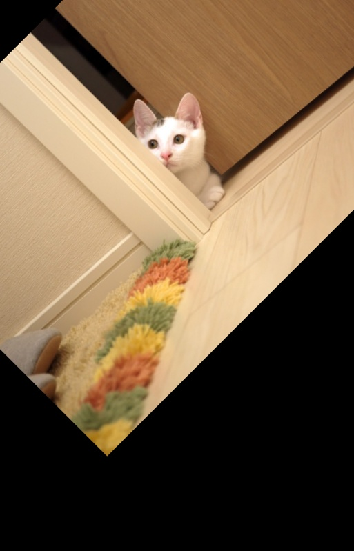

Computer Vision and Image Processing
Kmeans Image Segmentation
A python program which segments an image using an unsupervised learning algorithm, K-means clustering in the RGB and LAB color space.
Technologies Used: Python, OpenCV, scikit-learn


Hyperspectral Image Alignment with RGB
Program to match the histograms of the two images (RGB and Hyperspectral) and perform feature based image alignment using SIFT.
Technologies Used: Python, OpenCV, scikit-image

Label Assignment to Explants
Program to assign labels to each explants in a RGB Image.
Steps performed:
- Separate the Explants in a RGB image by dividing the image into a grid.
- Performing kmeans on each grid and assigning labels to the clustered explant.
Technologies Used: Python, scikit-image, Pandas, Numpy


Dataset Augmentation
Python program which provides utilities to augment dataset for Computer Vision Projects.
Technologies Used: Python, OpenCV, Numpy, Pytorch


InVitro Segmentation
Trained the Deeplab v3+ model to segment the plant traits.
The segmented images are aligned with the hyperspectral images by calculating the homography matrix using optical flow.
The pipeline is used for the detection of transgenic tissues in plant tissue cultures.
Technologies Used: Python, Tensorflow, Scipy, Numpy
Plant Traits Segmentation
Trained the PSPNet model to segment the traits for plants growth analysis.
Achieved a 79.40% Mean Intersection over Union(IoU) on the test dataset.
Technologies Used: Python, Pytorch, Numpy, Pillow
Deep interactive object selection
Ongoing.
Technologies Used: Python, Tensorflow